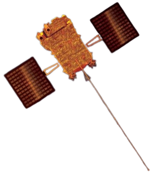
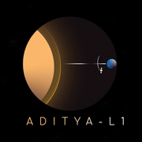
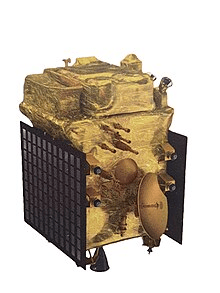
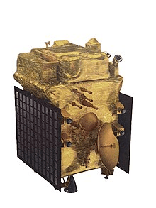

ADITYA-L1
ஆதித்யா-எல்1 என்பது சூரிய வளிமண்டலத்தை ஆய்வு செய்வதற்கான ஒரு கரோனாகிராபி விண்கலமாகும், இது இந்திய விண்வெளி ஆராய்ச்சி அமைப்பு (ISRO) மற்றும் பல்வேறு இந்திய ஆராய்ச்சி நிறுவனங்களால் வடிவமைக்கப்பட்டு உருவாக்கப்பட்டது.[1] இது பூமியிலிருந்து சுமார் 1.5 மில்லியன் கிமீ தொலைவில் பூமிக்கும் சூரியனுக்கும் இடையே உள்ள எல்1 லாக்ரேஞ்ச் புள்ளியைச் சுற்றி ஒரு ஒளிவட்டப் பாதையில் சுற்றி வரும், அங்கு சூரிய வளிமண்டலம், சூரிய காந்தப் புயல்கள் மற்றும் பூமியைச் சுற்றியுள்ள சுற்றுச்சூழலில் அவற்றின் தாக்கம் ஆகியவற்றை ஆய்வு செய்யும்.[7 ] சூரியனைக் கவனிப்பதற்காக அர்ப்பணிக்கப்பட்ட முதல் இந்தியப் பணி இதுவாகும். நிகர் ஷாஜி திட்டத்தின் இயக்குனர்.[8][9][10][11] ஆதித்யா-எல்1 பிஎஸ்எல்வி சி57 இல் 2 செப்டம்பர் 2023 அன்று 11:50 IST மணிக்கு ஏவப்பட்டது,[12][4][5] இஸ்ரோவின் சந்திரன் பணியான சந்திரயான்-3 வெற்றிகரமாக தரையிறங்கிய பத்து நாட்களுக்குப் பிறகு. ஏறக்குறைய ஒரு மணி நேரத்திற்குப் பிறகு அதன் சுற்றுப்பாதையை வெற்றிகரமாக அடைந்தது, மேலும் 12:57 IST இல் அதன் நான்காவது கட்டத்தில் இருந்து பிரிந்தது.[13]
Aditya-L1

ஆதித்யா-எல்1 பயன்படுத்தப்பட்ட கட்டமைப்பில்
பணி - சூரிய கண்காணிப்பு
செயல்பாடு - isro
காஸ்பார் ஐடி - 2023-132A
சாட்கேட் எண் - 57754
இணையதளம்- www.isro.gov.in/Aditya_L1.html
பணி காலம் - 5.2 ஆண்டுகள் (திட்டமிடப்பட்டது) 11 நாட்கள் (கடந்தது)
விண்கலத்தின் பண்புகள்
விண்கலம் - PSLV-XL/C-57
விண்கல வகை- PSLV
பேருந்து- L-1K
உற்பத்தியாளர்- ISRO / IUCAA/IIA
ஏவுதல் நிறை- 1475 kg (3252 ib)
பணியின் ஆரம்பம்
வெளியீட்டு தேதி 2 செப்டம்பர் 2023, 11:50 IST (06:20 UTC)[4][5]
ராக்கெட் - PSLV-XL
ஏவுதளம் - சதீஷ் தவான் விண்வெளி மையம்
ஒப்பந்ததாரர் - இஸ்ரோ
சுற்றுப்பாதை அளவுருக்கள்
குறிப்பு அமைப்பு - சூரியன்-பூமி L1 சுற்றுப்பாதை
ஆட்சி - ஹாலோ சுற்றுப்பாதை
காலம் - 177.86 நாட்கள்[6]
சகாப்தம் - ஜனவரி 2024 (திட்டமிடப்பட்டது)

பணி நோக்கங்கள்
ஆதித்யா-எல்1 இன் முக்கிய அறிவியல் நோக்கங்கள்:
சூரியனின் குரோமோஸ்பியர் மற்றும் கரோனாவின் இயக்கவியலைக் கவனிக்க
குரோமோஸ்பெரிக் மற்றும் கரோனல் வெப்பமாக்கல், பகுதியளவு அயனியாக்கம் செய்யப்பட்ட பிளாஸ்மாவின் இயற்பியல், கரோனல் மாஸ் எஜெக்ஷன்கள் (CMEகள்) மற்றும் அவற்றின் தோற்றம், கரோனல் காந்தப்புலம் மற்றும் வெப்ப பரிமாற்ற வழிமுறைகள் மற்றும் விரிவடைதல் பரிமாற்றங்கள்
அதன் நிலையைச் சுற்றியுள்ள இயற்பியல் துகள் சூழலைக் கவனிக்க
சூரிய வெடிப்புகளுக்கு வழிவகுக்கும் கொரோனாவுக்கு கீழே பல அடுக்குகளில் செயல்முறைகளின் வரிசையை தீர்மானிக்க
விண்வெளி வானிலை மற்றும் சூரியக் காற்றின் தோற்றம், கலவை மற்றும் இயக்கவியல் ஆகியவற்றை ஆய்வு செய்ய[14]
வரலாறு
ஆதித்யா ஜனவரி 2008 இல் விண்வெளி அறிவியலுக்கான ஆலோசனைக் குழுவால் (ADCOS) கருத்தாக்கப்பட்டது.[15][16] இது ஆரம்பத்தில் 400 கிலோ (880 எல்பி) சிறிய செயற்கைக்கோளாக குறைந்த புவி சுற்றுப்பாதையில் (800 கிமீ) சூரிய கரோனாவை ஆய்வு செய்வதற்காக கரோனாகிராஃப் மூலம் திட்டமிடப்பட்டது. 2016-2017 நிதியாண்டிற்கு ₹3 கோடி சோதனை பட்ஜெட் ஒதுக்கப்பட்டது.[17][18][19] இந்த பணியின் நோக்கம் பின்னர் விரிவுபடுத்தப்பட்டது மேலும் இது லாக்ரேஞ்ச் பாயின்ட் எல்1 இல் வைக்கப்படும் ஒரு விரிவான சூரிய மற்றும் விண்வெளி சுற்றுச்சூழல் கண்காணிப்பகமாக மாறியது,[20] எனவே இந்த பணி "ஆதித்யா-எல்1" என மறுபெயரிடப்பட்டது. ஜூலை 2019 நிலவரப்படி, இந்த பணிக்கு ஏவுகணை செலவுகள் தவிர்த்து ₹378 கோடிகள் ஒதுக்கப்பட்டுள்ளது.[5]

பெயர்
"ஆதித்யா" என்பது சூரியனைக் குறிக்கும் இந்து தெய்வங்களான சூரியன் மற்றும் ஆதித்யாக்களின் பெயரால் அழைக்கப்படுகிறது. "L1" பதவியானது சூரியனுக்கும் பூமிக்கும் இடையே உள்ள விண்கலத்தின் இலக்கான லாக்ரேஞ்ச் புள்ளி 1 ஐக் குறிக்கிறது.[5]
கண்ணோட்டம்
 பூமியிலிருந்து 1,500,000 கிமீ (930,000 மைல்) தொலைவில் உள்ள எல்1 புள்ளியைச் சுற்றியுள்ள ஒளிவட்டப் பாதையை அடைய ஆதித்யா-எல்1 மிஷன் ஏவப்பட்ட[21] சுமார் 109 பூமி நாட்கள் எடுக்கும். ஒரு வருடத்திற்கு 0.2-4 m/s என்ற ஸ்டேஷன் கீப்பிங் Δv இல் பராமரிக்கப்படும் போது, விண்கலம் அதன் பணி காலத்திற்கு ஒளிவட்ட சுற்றுப்பாதையில் இருக்க திட்டமிடப்பட்டுள்ளது
1,500 கிலோ (3,300 எல்பி) செயற்கைக்கோள் பல்வேறு நோக்கங்களுடன் ஏழு அறிவியல் பேலோடுகளை சுமந்து செல்கிறது, இதில் கரோனல் வெப்பமாக்கல், சூரிய காற்று முடுக்கம், கரோனல் மேக்னடோமெட்ரி, புற ஊதா சூரிய கதிர்வீச்சின் தோற்றம் மற்றும் கண்காணிப்பு (இது பூமியின் மேல் வளிமண்டல இயக்கவியல் மற்றும் உலகளாவிய காலநிலை இயக்கவியல்)
சூரிய ஒளிக்கோளத்தை குரோமோஸ்பியர் மற்றும் கரோனாவுடன் இணைத்தல்,[23] மற்றும் சூரியக் காற்றின் ஆற்றல்மிக்க துகள் பாய்வுகள் மற்றும் காந்தப்புலங்கள் மற்றும் சூரிய காந்தப் புயல்களை அளப்பதன் மூலம் பூமியைச் சுற்றியுள்ள விண்வெளி சூழலின் உள்-சிட்டு குணாதிசயங்கள்.
ஆதித்யா-எல்1 சூரியனின் ஒளிக்கோளம், குரோமோஸ்பியர் மற்றும் கரோனா ஆகியவற்றின் அவதானிப்புகளை வழங்கும். அதன் அறிவியல் பேலோடுகள் பூமியின் காந்தப்புலத்தில் இருந்து குறுக்கீடு இல்லாமல் வைக்கப்பட வேண்டும், எனவே அசல் ஆதித்யா பணிக் கருத்தில் முன்மொழியப்பட்டபடி குறைந்த புவி சுற்றுப்பாதையில் பயனுள்ளதாக இருந்திருக்க முடியாது.[24]
சூரிய இயற்பியல் துறையில் தீர்க்கப்படாத முக்கிய பிரச்சனைகளில் ஒன்று, சூரியனின் மேல் வளிமண்டலம் 1,000,000 K (1,000,000 °C; 1,800,000 °F) வெப்பநிலையைக் கொண்டுள்ளது, அதேசமயம் கீழ் வளிமண்டலம் வெறும் 6,000 K (5,730 °C; 10,340 °F) ஆகும். F). கூடுதலாக, சூரியனின் கதிர்வீச்சு பூமியின் வளிமண்டலத்தின் இயக்கவியலை குறுகிய கால அளவிலும் நீண்ட கால அளவிலும் எவ்வாறு பாதிக்கிறது என்பது சரியாகப் புரிந்து கொள்ளப்படவில்லை. இந்த பணி சூரியனின் வளிமண்டலத்தின் வெவ்வேறு அடுக்குகளின் ஒரே நேரத்தில் படங்களைப் பெறும், இது ஆற்றல் அனுப்பப்படும் மற்றும் ஒரு அடுக்கிலிருந்து மற்றொரு அடுக்கிற்கு மாற்றப்படும் வழிகளை வெளிப்படுத்தும். எனவே, ஆதித்யா-எல்1 பணியானது சூரியனின் இயக்கவியல் செயல்முறைகளைப் பற்றிய விரிவான புரிதலை செயல்படுத்தும் மற்றும் சூரிய இயற்பியல் மற்றும் சூரிய இயற்பியலில் உள்ள சில நிலுவையிலுள்ள சிக்கல்களைத் தீர்க்கும்.

பூமியிலிருந்து 1,500,000 கிமீ (930,000 மைல்) தொலைவில் உள்ள எல்1 புள்ளியைச் சுற்றியுள்ள ஒளிவட்டப் பாதையை அடைய ஆதித்யா-எல்1 மிஷன் ஏவப்பட்ட[21] சுமார் 109 பூமி நாட்கள் எடுக்கும். ஒரு வருடத்திற்கு 0.2-4 m/s என்ற ஸ்டேஷன் கீப்பிங் Δv இல் பராமரிக்கப்படும் போது, விண்கலம் அதன் பணி காலத்திற்கு ஒளிவட்ட சுற்றுப்பாதையில் இருக்க திட்டமிடப்பட்டுள்ளது
1,500 கிலோ (3,300 எல்பி) செயற்கைக்கோள் பல்வேறு நோக்கங்களுடன் ஏழு அறிவியல் பேலோடுகளை சுமந்து செல்கிறது, இதில் கரோனல் வெப்பமாக்கல், சூரிய காற்று முடுக்கம், கரோனல் மேக்னடோமெட்ரி, புற ஊதா சூரிய கதிர்வீச்சின் தோற்றம் மற்றும் கண்காணிப்பு (இது பூமியின் மேல் வளிமண்டல இயக்கவியல் மற்றும் உலகளாவிய காலநிலை இயக்கவியல்)
சூரிய ஒளிக்கோளத்தை குரோமோஸ்பியர் மற்றும் கரோனாவுடன் இணைத்தல்,[23] மற்றும் சூரியக் காற்றின் ஆற்றல்மிக்க துகள் பாய்வுகள் மற்றும் காந்தப்புலங்கள் மற்றும் சூரிய காந்தப் புயல்களை அளப்பதன் மூலம் பூமியைச் சுற்றியுள்ள விண்வெளி சூழலின் உள்-சிட்டு குணாதிசயங்கள்.
ஆதித்யா-எல்1 சூரியனின் ஒளிக்கோளம், குரோமோஸ்பியர் மற்றும் கரோனா ஆகியவற்றின் அவதானிப்புகளை வழங்கும். அதன் அறிவியல் பேலோடுகள் பூமியின் காந்தப்புலத்தில் இருந்து குறுக்கீடு இல்லாமல் வைக்கப்பட வேண்டும், எனவே அசல் ஆதித்யா பணிக் கருத்தில் முன்மொழியப்பட்டபடி குறைந்த புவி சுற்றுப்பாதையில் பயனுள்ளதாக இருந்திருக்க முடியாது.[24]
சூரிய இயற்பியல் துறையில் தீர்க்கப்படாத முக்கிய பிரச்சனைகளில் ஒன்று, சூரியனின் மேல் வளிமண்டலம் 1,000,000 K (1,000,000 °C; 1,800,000 °F) வெப்பநிலையைக் கொண்டுள்ளது, அதேசமயம் கீழ் வளிமண்டலம் வெறும் 6,000 K (5,730 °C; 10,340 °F) ஆகும். F). கூடுதலாக, சூரியனின் கதிர்வீச்சு பூமியின் வளிமண்டலத்தின் இயக்கவியலை குறுகிய கால அளவிலும் நீண்ட கால அளவிலும் எவ்வாறு பாதிக்கிறது என்பது சரியாகப் புரிந்து கொள்ளப்படவில்லை. இந்த பணி சூரியனின் வளிமண்டலத்தின் வெவ்வேறு அடுக்குகளின் ஒரே நேரத்தில் படங்களைப் பெறும், இது ஆற்றல் அனுப்பப்படும் மற்றும் ஒரு அடுக்கிலிருந்து மற்றொரு அடுக்கிற்கு மாற்றப்படும் வழிகளை வெளிப்படுத்தும். எனவே, ஆதித்யா-எல்1 பணியானது சூரியனின் இயக்கவியல் செயல்முறைகளைப் பற்றிய விரிவான புரிதலை செயல்படுத்தும் மற்றும் சூரிய இயற்பியல் மற்றும் சூரிய இயற்பியலில் உள்ள சில நிலுவையிலுள்ள சிக்கல்களைத் தீர்க்கும்.

பேலோடுகள்
ஆதித்யா-எல்1 இன் கருவிகள் சூரிய வளிமண்டலத்தை, முக்கியமாக குரோமோஸ்பியர் மற்றும் கரோனாவைக் கண்காணிக்க டியூன் செய்யப்பட்டுள்ளன. இன்-சிட்டு கருவிகள் L1 இல் உள்ளூர் சூழலைக் கண்காணிக்கும். கப்பலில் ஏழு பேலோடுகள் உள்ளன, நான்கு சூரியனின் தொலைநிலை உணர்தலுக்காகவும், மூன்று இடத்தில் உள்ள கண்காணிப்புக்காகவும் உள்ளன. பல்வேறு ISRO மையங்களின் நெருங்கிய ஒத்துழைப்புடன் நாட்டில் உள்ள பல்வேறு ஆய்வகங்களால் பேலோடுகள் உருவாக்கப்பட்டுள்ளன.[25]
துவக்கவும்
2 செப்டம்பர் 2023 அன்று, 11:50 IST மணிக்கு, ஸ்ரீஹரிகோட்டாவில் அமைந்துள்ள சதீஷ் தவான் விண்வெளி மையத்தின் (SDSC) இரண்டாவது ஏவுதளத்தில் இருந்து, துருவ செயற்கைக்கோள் ஏவுதல் வாகனம் (PSLV-C57) ஆதித்யா-L1 இன் வெற்றிகரமான ஏவுதலை நிறைவேற்றியது.
ஆதித்யா-எல்1, 63 நிமிடங்கள் மற்றும் 20 வினாடிகள் பறக்கும் காலத்தைத் தொடர்ந்து, 12:54 IST மணிக்கு பூமியைச் சுற்றியுள்ள நீள்வட்ட சுற்றுப்பாதையில் வெற்றிகரமாக செலுத்தப்பட்டது.[26]
ஆதித்யா-எல்1 ஆனது எல்1 லாக்ரேஞ்ச் புள்ளியை நோக்கி ஒரு பரிமாற்ற சுற்றுப்பாதையில் செலுத்தப்படுவதற்கு முன், பூமியில் சுற்றிய நான்கு சுற்றுப்பாதை சூழ்ச்சிகளை தொடர திட்டமிடப்பட்டுள்ளது. அது ஏவப்பட்ட சுமார் 127 நாட்களுக்குப் பிறகு L1 புள்ளியில் அதன் நியமிக்கப்பட்ட சுற்றுப்பாதையை அடையும் என எதிர்பார்க்கப்படுகிறது.[27]
சுற்றுப்பாதையை உயர்த்தும் தீக்காயங்கள்
முதல் சுற்றுப்பாதையை உயர்த்தும் எரிதல்
செப்டம்பர் 3, 2023 அன்று ஆதித்யா-எல்1 அதன் முதல் பூமிக்கு செல்லும் சூழ்ச்சியை நிகழ்த்தியது, அதன் சுற்றுப்பாதையை 245 கிமீ (152 மைல்) 22,459 கிமீ (13,955 மைல்) சுற்றுப்பாதையில் உயர்த்தியது.[28]
இரண்டாவது சுற்றுப்பாதையை உயர்த்தும் எரிப்பு
5 செப்டம்பர் 2023 அன்று ஆதித்யா-எல்1 தனது இரண்டாவது பூமியை நோக்கிச் செல்லும் சூழ்ச்சியை நிகழ்த்தியது, அதன் சுற்றுப்பாதையை 282 கிமீ (175 மைல்) வரை 40,225 கிமீ (24,995 மைல்) சுற்றுப்பாதையில் உயர்த்தியது.
மூன்றாவது சுற்றுப்பாதையை உயர்த்தும் எரிப்பு
10 செப்டம்பர் 2023 அன்று ஆதித்யா எல்1 தனது மூன்றாவது பூமியை நோக்கிச் செல்லும் சூழ்ச்சியை நிகழ்த்தியது, அதன் சுற்றுப்பாதையை 296 கிமீ (184 மைல்) வரை 71,767 கிமீ (44,594 மைல்) சுற்றுப்பாதையில் உயர்த்தியது.
குழு
நிகர் ஷாஜி - திட்ட இயக்குனர்
சங்கரசுப்ரமணியன் கே - பணியின் முதன்மை விஞ்ஞானி[33]